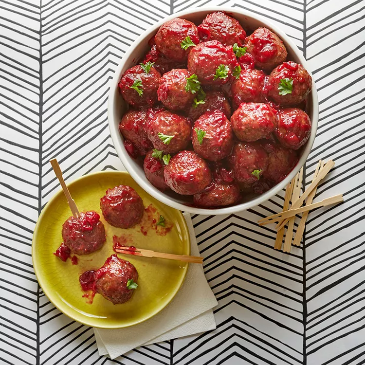

Crock Pot Party Meatballs

Description
Delicious snackable meatballs, perfect for a party. Incredibly easy to make and always a hit!
Ingredients
1x (2 pound) bag of frozen cooked meatballs
1x (14 ounce) can of whole berry cranberry sauce
1x (12 ounce) bottle of tomato-based chili sauce
1/2 of a lemon, juiced
2 drops of your favourite hot sauce, or more to taste
Steps
Place meatballs, cranberry sauce, lemon juice, and hot sauce into slow cooker.
Stir ingredients in slow cooker to evenly distribute sauce.
Cook on High until meatballs are completely thawed and hot (Should take about 3 hours).
Return to main page